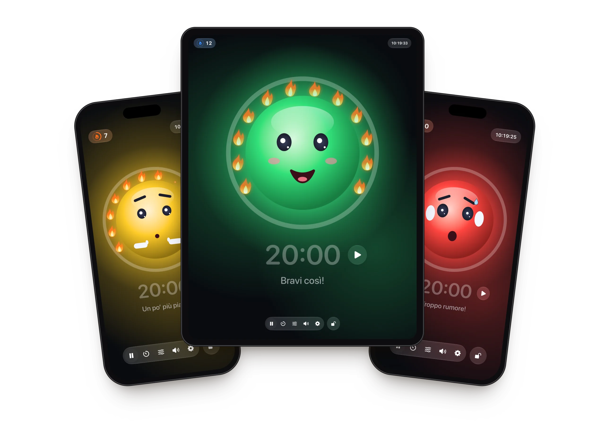
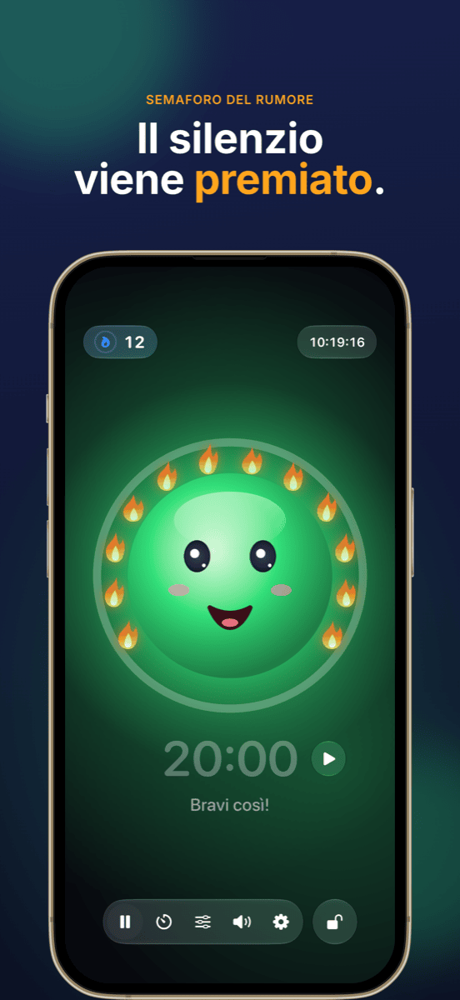
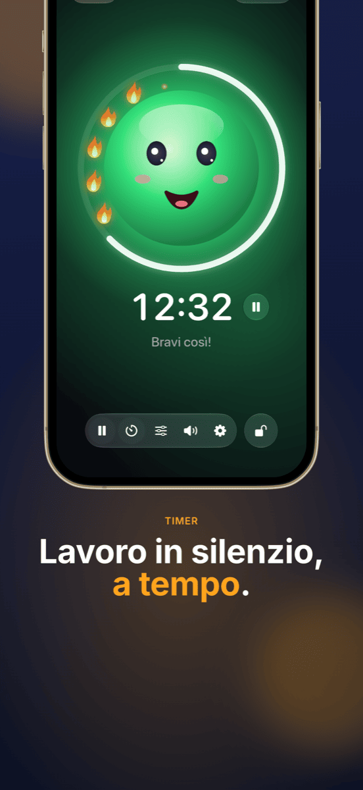
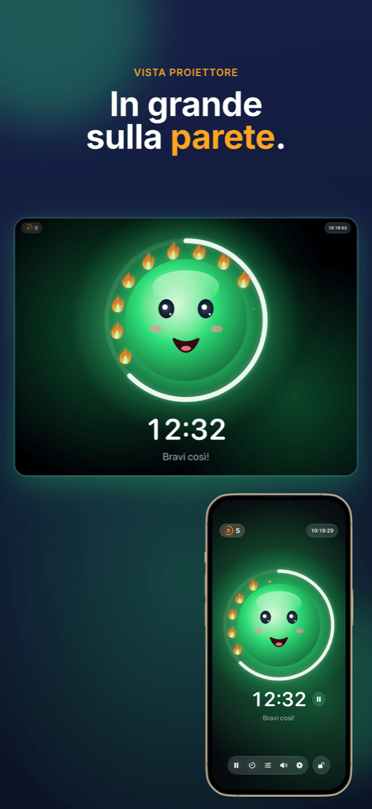
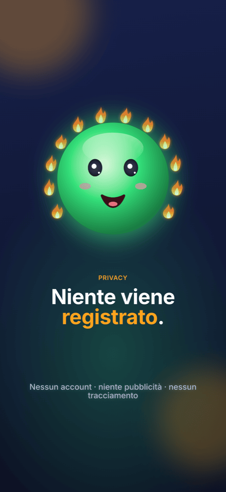

Ruhe
Il semaforo del rumore gentile per la classe: lavorare in silenzio porta fiamme – il rumore non viene mai punito.






Funzioni
Semaforo con mascotte
Verde, giallo, rosso: un viso allegro mostra quanto rumore c’è. Sul giallo fa piano «shh», sul rosso si tappa le orecchie.
Fiamme invece di punizioni
Finché c’è silenzio, si accende una fiamma dopo l’altra. Dodici fiamme formano una corona completa, e si festeggia. Se c’è troppo rumore, le fiamme si spengono.
Il timer in vista
L’anello intorno alla mascotte mostra il tempo rimanente. Avvio e stop proprio accanto all’ora; alla fine la misurazione va in pausa.
Vista proiettore
Sul proiettore o su un secondo schermo il semaforo appare a schermo intero – i comandi restano sul tuo iPad.
Adatto a ogni classe
Con due cursori decidi quando scattano il giallo e il rosso – oppure Ruhe ascolta per 5 secondi e si calibra da solo.
Blocca i comandi
Bloccati con Face ID o codice, così nessuno in classe cambia nulla.
Come funziona
Posiziona l’iPad
Apri Ruhe e tocca il viso: la misurazione parte.
Fai lavorare la classe
La mascotte mostra alla classe quanto rumore c’è e raccoglie fiamme per ogni momento di silenzio.
Guarda il risultato
A fine lezione conta ciò che ha funzionato: la corona di fiamme.
Guida
Aiuto e supporto
Ruhe non misura nulla: cosa faccio?
Ruhe ha bisogno di accedere al microfono. Consentilo in Impostazioni → Privacy e sicurezza → Microfono → Ruhe.
Il semaforo diventa rosso troppo presto o troppo tardi.
Tocca l’icona dei cursori nella barra e sposta le soglie del giallo e del rosso – oppure usa «Imposta automaticamente» mentre la classe lavora normalmente.
Come mostro Ruhe sul proiettore?
Collega l’iPad al proiettore via cavo o AirPlay. Ruhe mostra lì automaticamente il semaforo a schermo intero, mentre i comandi restano sull’iPad.
Come azzero le fiamme?
Tocca il contatore delle fiamme in alto a sinistra. Lì puoi correggere le fiamme o riportarle tutte a 0. Se Ruhe è rimasto in background per più di 10 minuti, la lezione successiva riparte comunque da 0.
Viene registrato qualcosa?
No. Ruhe misura solo il volume: nulla viene registrato, salvato o inviato. Tutti i dettagli nell’informativa sulla privacy.
Non trovi la tua domanda?
Scrivi a info@crabucate.de: di solito rispondo entro un paio di giorni.
Un silenzio che fa bene.
Per iPad e iPhone – disponibile su App Store.